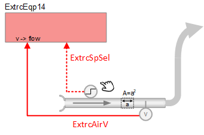

提取臂、速度传感器和管道区域 (ExtrcEqp14)
 | 该应用程序功能监视velocity sensor在一个analog input object(ExtrcAirV) 并使用具有管道面积值的数据模型计算通过抽气臂的气流。 AF 在有或没有二进制输入 (ExtrcSpSel) 的情况下均可工作，以选择气流设定点。如果未连接二进制输入，设定值将始终等于 ExtrcSp1。如果连接了二进制输入，则当 BI 处于活动状态时，设定值将等于 ExtrcSp1；当 BI 处于非活动状态时，设定值将等于 ExtrcSp2。 |
Required elements and how to configure them:
元素 | I/O | 信号类型 |
|---|---|---|
ExtrcAirV "Extraction air velocity" | On-board output, Extraction air velocity | 0…10V |
（选修的） | On-board output, Extraction setpoint selector | Binary input |
Function
AF 的功能如上所述。主要输出信号是抽气有效风速、抽气当前设定值和抽气体积流量的计算值。
主要特点：
- Analog input air velocity sensor monitor
- Setpoints for extract airflow, configurable
- Failure mode (configurable) for air volume flow sensor
- Trend for extraction present setpoint
- Trend for extraction air volume flow
- Event enrollment for Monitoring for extraction air volume flow
Configuration
 Objects
Objects
描述 | 目的 | 类型 | 默认值 |
|---|---|---|---|
Extraction duct area | ExtrcDuctArea | ACnfVal | 0.05 [m2] |
Extraction duct shape | ExtrcDuctShape | MCnfVal | Round |
Extraction dimension A | ExtrcDmsnA | ACnfVal | 20 [cm] |
Extraction dimension B | ExtrcDmsnB | ACnfVal | 20 [cm] |
Extraction flow coefficient | ExtrcFlCoef | ACnfVal | 1 |
Extraction setpoint 1 | ExtrcSp1 | ACnfVal | 0 |
Extraction setpoint 2 | ExtrcSp2 | ACnfVal | 0 |
Extraction setpoint 3（未使用） | ExtrcSp3 (not used) |
|
|
Configuration
 Parameters
Parameters
描述 | 范围 | 默认值 |
|---|---|---|
Enable propagation air volume flow failure 确定系统是否从数字压力传感器接收有关气流故障的更新。如果设置为“否”，系统假定气流有效。请参阅房间压力控制应用程序故障响应和配置。 | EnPrpgAflFail | No |
Time constant for air volume flow 空气体积流量传感器上的衰减滤波器的时间常数。较大的值有助于稳定波动的风量流量传感器值。该常数的较大值还会导致空气体积流量传感器报告的值对过去的测量值具有更大的权重。保留为 0 将禁用过滤器。 | TiConAirFl | 0 [s] |
Switch delay for tracking method to air volume flow 如果跟踪方法从设定点切换到气流（请参阅 SwiTolTckMthd），这将设置进行切换之前等待的时间量。 | SwiDlyTckMthd | 6000 [s] |
Switch tolerance for tracking method to air volume flow 设置相对气流设定点和当前相对气流之间可接受的差异水平（百分比）。默认情况下，系统跟踪方法遵循气流设定点。但如果当前相对气流偏离相对设定值的百分比量大于 SwiTolTckMthd 参数设置的值，系统将从跟踪设定值切换到跟踪实际气流。 将容差级别 (SwiTolTckMthd) 设置为 100% 并不总是会阻止跟踪从设定值切换到气流。 | SwiTolTckMthd | 5 [%] |
Nominal air volume flow 表示风门完全打开时的最大预期气流值。为了帮助标准化气流和气流设定值以实现控制目的，系统将始终选择 AirFlNom 和任何其他气流配置值之间的最高值。 | AirFlNom | 0 [m3/h] 0 [ft3/min] 0 [l/s] |
Air volume flow unit | AirFlUnit |
|
Interface
界面 | 描述 | 类型 | 参考号 | 拥有者 |
|---|---|---|---|---|
ExtrcSpSel | Extraction setpoint selector | BI | ◉ | Room segment / Field device |
ExtrcAirV | Extraction air velocity | AI | ◉ | Room segment / Field device |
ExtrcAirVEff | Extraction effective air velocity | ACalcVal | ● | - |
ExtrcPrSp | Extraction present setpoint | ACalcVal | ● | - |
TrndExtrcPrSp | Trend for extraction present setpoint | FtrSel | ● | - |
ExtrcAirFl | Extraction air volume flow | ACalcVal | ● | - |
TrndExtrcAirFl | Trend for extraction air volume flow | FtrSel | ● | - |
ExtrcAirFlMon | Monitoring for extraction air vol.flow | FtrSel | ● | - |
ExtrcDuctArea | Extraction duct area | ACnfVal | ● | - |
ExtrcDuctShape | Extraction duct shape | MCnfVal | ● | - |
ExtrcDmsnA | Extraction dimension A | ACnfVal | ● | - |
ExtrcDmsnB | Extraction dimension B | ACnfVal | ● | - |
ExtrcFlCoef | Extraction flow coefficient | ACnfVal | ● | - |
ExtrcSp1 | Extraction setpoint 1 | ACnfVal | ● | - |
ExtrcSp2 | Extraction setpoint 2 | ACnfVal | ● | - |
ExtrcSp3 (not used) | Extraction setpoint 3（未使用） |
|
|
|